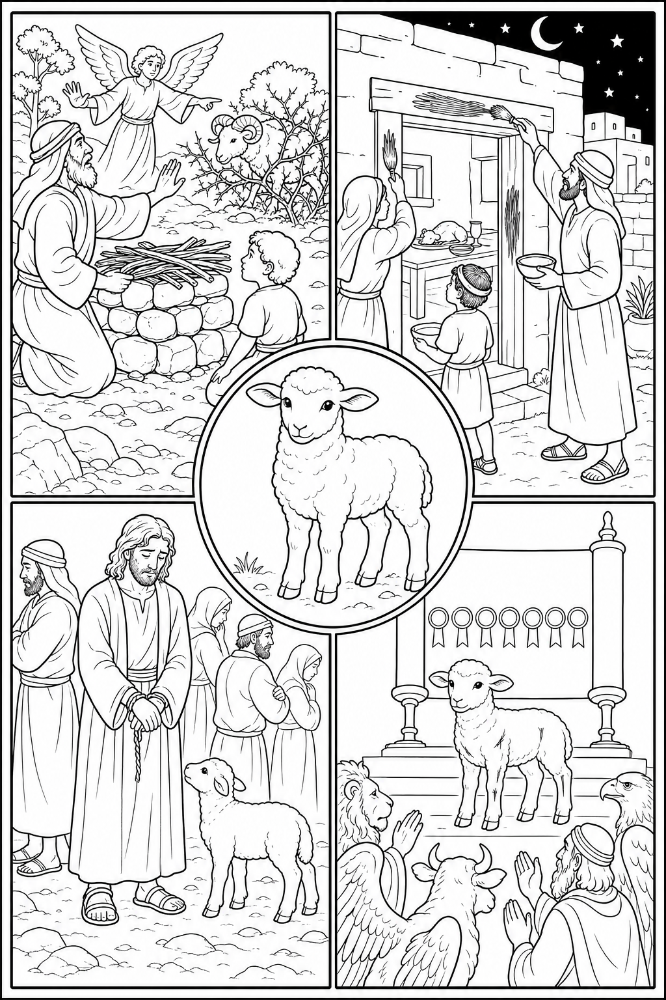

The Lord Will Provide
Genesis 22:1–14
- What does God provide in Isaac’s place?
- How is the ram acting as a substitute?
Connects by
Biblical Imagery
John 1:29 · ESV
Behold, the Lamb of God, who takes away the sin of the world!
Genesis 22:1–14
Exodus 12:1–13
Isaiah 53:4–7
Revelation 5:6–12
Biblical Imagery
